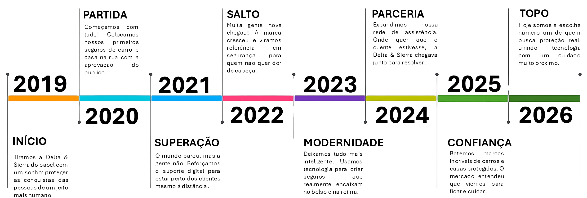

Selo de Confiança Máxima: Alcançamos a marca de 98% de satisfação no atendimento aos sinistros. Em um mercado onde as pessoas costumam ter dor de cabeça com burocracia, ser reconhecido pela agilidade na hora de resolver o problema do cliente foi nossa maior medalha.
Tecnologia Própria de Risco: Desenvolvemos um sistema inteligente de análise que reduziu o valor das apólices para bons motoristas e donos de casa em até 20%, sem perder a qualidade da cobertura. Isso provou que a gente consegue ser justo usando a cabeça (e os dados).
Expansão Nacional "Pé no Barro":Em 2024, consolidamos nossa presença em todos os estados do Brasil. Não importa se o pneu furou em uma capital ou se a casa precisa de reparo no interior, nossa rede de assistência hoje cobre o país inteiro com o mesmo padrão de qualidade.
Nossa missão: Satisfazer a todas as necessidades do cliente. Não importa o tamanho do problema, nosso foco diário é garantir que você tenha exatamente a solução e o suporte que precisa.
Nossa visão: A expansão nas atuações. Queremos levar nossa proteção para cada vez mais lugares e tipos de bens, crescendo junto com as conquistas de quem confia e acredita na Delta & Sierra.
Nossos valores: O nosso comprometimento e a responsabilidade. Levamos a sério a confiança que você deposita em nós; por isso, agimos com ética e dedicação total em cada apólice e atendimento.